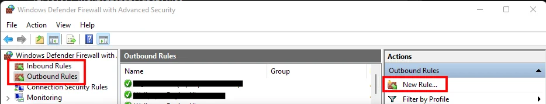
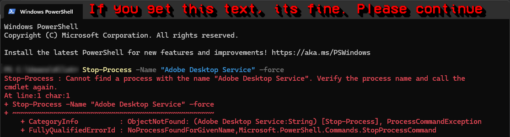
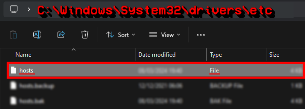

✦ Adobe Ungenuine Popups Fix
All Adobe software includes a client called "Adobe Genuine Service" which periodically verifies whether installed Adobe apps are genuine or not, and if triggered, said software will be disabled after a 10 day grace period. That said, there's no need to panic as this is easily fixable.
If you are a user of GenP or MacKed, please refer to any built in tools or their respective websites for more accurate information rather than this guide.
Windows
The Basics...
- Don't be on a virtual IP address (VPN/Proxy) - it will circumvent local settings such as hosts file or firewall rules.
- Make sure your firewall is enabled or else no rules will not be applied.
- Don't have Creative Cloud installed. m0nkrus installers block communications to Adobe servers, and you require no account to use m0nkrus. It will very often break if you have Creative Cloud. Uninstall it here.
Method 1 - Firewall Rules
Blocking the targeted software from connecting to the internet is effective as it prevents Adobe Genuine Service from being able to verify your licensing status.
You can easily do this by setting up some firewall rules.
- Open "Windows Defender Firewall with Advanced Security".
- Click “Outbound Rules” on the left side.
- Click “New Rule..” on the right side.

- Select your Adobe application(s), for example, "AfterFX.exe" for After Effects which is normally located at:
C:\Program Files\Adobe\Adobe After Effects (version)\Support Files- Select “Block the Connection” and name the rule whatever you want.
- If the alert still appears, repeat the same steps but this time set up an "Inbound" rule.
IMPORTANT
- You must block the actual exe, not a shortcut in order for this to work. Shortcuts icons have arrows on them.
- If you have a third party software managing your firewall (how do I check?), you'll have to block the app inside that software for this to work.
Alternatively, you can automatically block all Adobe firewalls by running this script.
This is not recommended if you're paying for any Adobe software or have a paid plugin/script.
- Download the script (Download ZIP, top right)
- Extract the zip folder
- Open the folder and run the .bat as administrator.
- Wait for it to complete, then you are done.
Method #2 - Block IPs
This method consists of blocking individual IPs that are linked to GCC, rather than blocking the software's internet connection as a whole. This method may require occasional updating as Adobe goes under new IPs, but is very effective and only blocks what is necessary, allowing users to keep access to any online only tools.
- Open PowerShell as Administrator and paste this command:
Stop-Process -Name "Adobe Desktop Service" -forceIf it says it cannot find the process, don't worry and continue to the next step.

- Open Notepad as Administrator, click "file" in the top left hand corner, then "Open".
- Head to the following location and make sure to select "All file types (.)", NOT "text (.txt)":
C:\Windows\System32\drivers\etc- Select the file named "host" and click open.

5. On a blank line below all existing text, copy and paste the following list of IPs found at https://a.dove.isdumb.one/list.txt and save, done!
Do not copy the text above the IP's. Start here.
Method #3 - Uninstall AGS
This method will uninstall Adobe Genuine Service, however it's one of the methods that rarely work, but is worth trying.
- Open PowerShell as Admin and input:
[System.Diagnostics.Process]::Start("C:\Program Files (x86)\Common Files\Adobe\AdobeGCClient\AdobeCleanUpUtility.exe")- Follow the on-screen instructions. If that directory is absent, then the service won’t be installed. If absent, skip this method.
Block AGS in firewall:
Create Outbound rules on Adobe Genuine Service.
Path of AGS:
C:\Program Files (x86)\Common Files\Adobe\Adobe Desktop Common\AdobeGenuineClient\AGSService.exeC:\Program Files\Adobe\Acrobat DC\Acrobat\GC\AGSService.exeMacOS
Method #1 - Block IPs automatically
Download Adobe Genuine Pop-up Blocker and run it.
This is a script that updates the hosts file with the Adobe blocklist periodically.
It runs in the background, and updates upon startup, and then every 30 minutes.
(If the blocklist url or internet isn't available, the hosts file is left untouched.)
INFO
If you are doing this method, you do not need to do Method #3.
This is simply an automatic metod, while #3 is manual.
Method #2 - Firewall Rules
Since blocking outgoing connections isn't a feature available on MacOS, you will need to download a third party software in order to achieve this. Radio Silence is one of the best and easiest firewall apps for MacOS.
Radio Silence normally cost 9 USD, however you can download a free version here, serial numbers are included in a text file in order to license the program.
Instructions (Radio Silence):
- Open Radio Silence, make sure "on" is toggled on.
- Click "block application" and select your adobe app(s).
- Click open, and you're done! You can close the app.
If the alert still shows after using Radio Silence:
- Open Security & Privacy in Mac settings
- Under Firewall select "Firewall Options"
- Click the plus icon and select your Adobe software
- Select "block incoming connections" and click OK
Method #3 - Manual IP block
- Open Terminal and paste this command:
sudo nano /etc/hostsEnter your password when prompted. It will not show due to censorship.
- Use the arrow keys on your keyboard to move the cursor to the very bottom. On a blank line below all existing text, copy and paste the following list: https://a.dove.isdumb.one/list.txt
Do not copy the text above the IP's. Start here.
Press Ctrl+X, Input: Y, then press the return button to save.
In a new terminal window, paste this command and click enter:
sudo killall -HUP mDNSResponder- Restart your computer and the alert should be gone.
As stated previously, Adobe will sometimes switch addresses meaning that your "disabled" alert may re-appear later. Just repeat the same steps to include any new IPs in your host, as the list above is frequently updated.